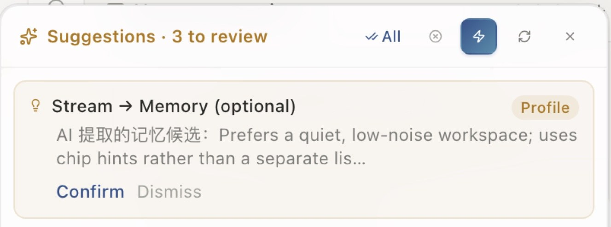
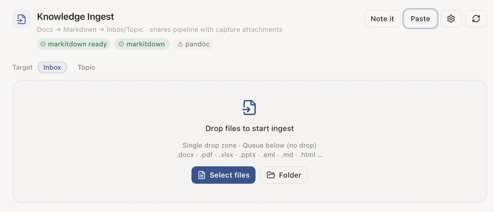

Topmind 桌面版
v4.16.0 topmindspace/topmind- 是什么
- 三栏桌面工作台：动态流时间轴加 AI 工作区，工作区有对话、建议、清单、应用四个页签。界面支持简体中文和 English。
- 适合谁
- 想要独立应用、在界面里确认 AI 建议的人。
- 安装
-
brew install topmindspace/tap/topmind上面是 macOS 的 Homebrew 安装（安装包为 Apple 芯片版本）。Windows 和 Linux 的 .exe、.AppImage、.deb 在 Releases 下载。

AI 建议 
文档导入